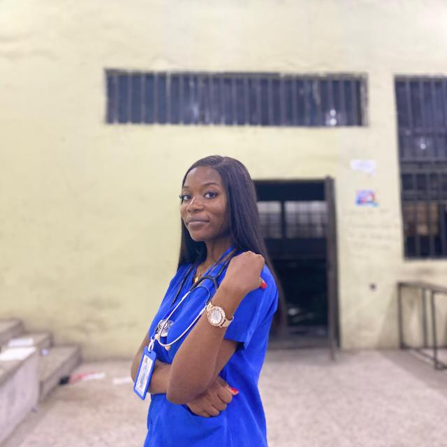

Cybersecurity and digital forensics
My goal is to build the knowledge and practical skills needed to help protect digital information, investigate cyber incidents and promote safer online practices.
GET TO KNOW ME
A little more about my background, interests and the direction I am working towards.

My name is Blessing Ogbaino. I have a background in Human Anatomy and a growing interest in technology. My learning journey has helped me develop curiosity, discipline, research skills and a desire to keep improving.
I am currently building my knowledge of cybersecurity and web technologies. I enjoy learning how digital systems work and how technology can be used responsibly to solve real-world problems.
WHAT I AM WORKING TOWARDS
My goal is to build the knowledge and practical skills needed to help protect digital information, investigate cyber incidents and promote safer online practices.
I am learning to create accessible, responsive websites and understand how frontend technologies support useful digital experiences.
MY TOOLKIT
These are skills I have learned or am currently developing.